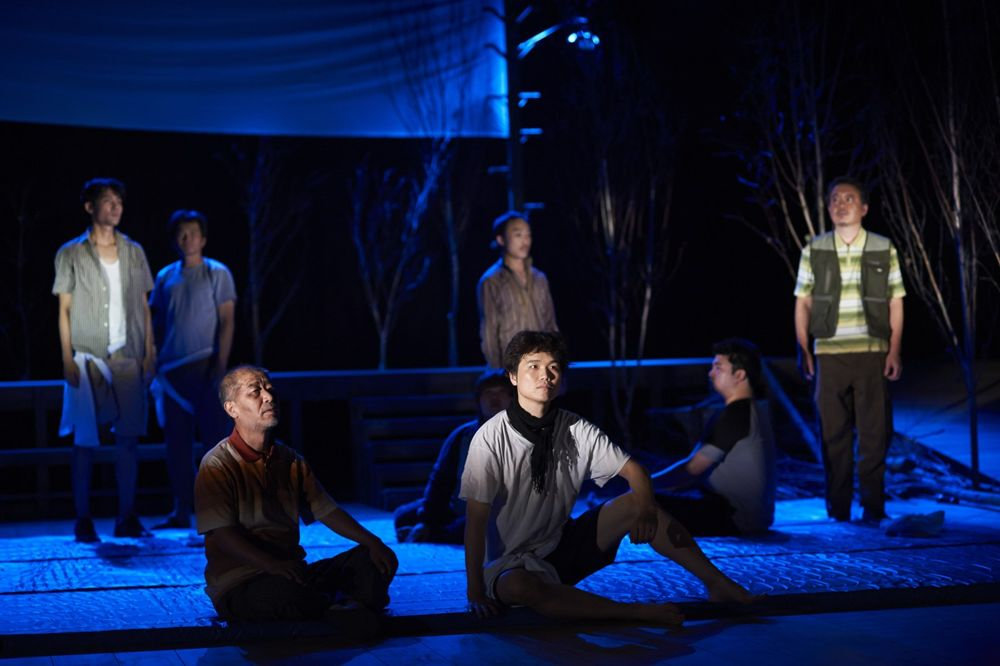

충남 연기군 조치원읍 일대가 세종특별자치시로 바뀌던 2012년, 땅값이 치솟고 마을이 흥청대던 조치원을 배경으로 셰익스피어의 〈햄릿〉을 다시 쓴다. '해문이', '오피리' 같은 한국화된 인물과 걸쭉한 충청도 사투리, 씨름판과 굿과 극중극 속에서, 개발 정책과 물신주의가 피워 낸 우리 사회의 상처를 코믹하고도 신랄하게 꼬집는다. 일인이역, 쌍둥이, 반복, 거울 같은 '2'의 모티브가 형식과 구조를 이룬다. 2014 제4회 벽산희곡상 수상작.
2015.8.28–9.13 / 국립극단 백성희장민호극장 - 제4회 벽산희곡상 수상작
작: 이철희
연출: 박상현
무대: 박상봉
조명: 남경식
음악: 이율구
의상: 김민우
분장: 이동민
영상: 김제민
움직임: 김수정
연기지도: 김선애
조연출: 김미현
기획: 지영관
제작: 윤한솔
출연: 이영석, 김정호, 김문식, 정나진, 최지연, 박경찬, 이동영, 이철희, 이필주, 황미영, 정양아, 곽동현, 김효영, 박근영, 최문석, 박하늘, 박상윤
이전: 〈174517〉 | 다음: 〈치정〉
아카이브로 돌아가기 | 아무 작품이나
발행일 2026.11.10